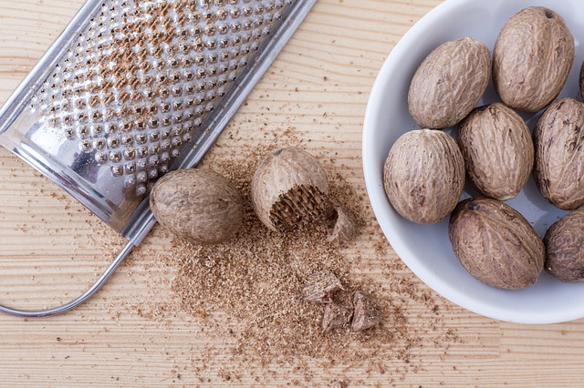
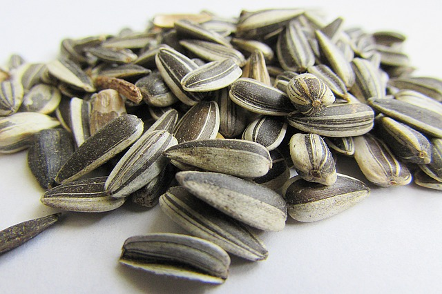

Anacardo

Avellana

Castañas

Nuez Moscada

Nueces

Semillas de Girasol

Pistacho

Piñones

Pasas de Uva
| Valor Nutricional |  |
|
|---|---|---|
| Almendra | 100 gr | Porcion de 80 gr |
| Energia(Kcal) | 546 | 460 |
| Proteinas(g) | 20,2 | 17,0 |
| Grasa total(g) | 46,9 | 39,5 |
| Hidratos de Carbono(g) | 20,6 | 17,3 |
| Fibra dietetica(g) | 11,6 | 9,8 |
| Sodio(mg) | 0,1 | 0,1 |
| Potasio(mg) | 669,8 | 564,0 |
| Vitamina A | 0 | 0 |
| Vitamina C | 0 | 0 |
| Vitamina E | 24,9 | 21,0 |
| Acido Folico | 0,1 | 0,1 |
| Calcio(mg) | 250,8 | 211,2 |
| Hierro(mg) | 3,5 | 3,0 |
| Valor Nutricional | |
|
|---|---|---|
| Anacardo | 100 gr | Porcion de 150 gr |
| Energia(Kcal) | 553 | 830 |
| Proteinas(g) | 18,2 | 27,3 |
| Grasa total(g) | 43,9 | 65,8 |
| Hidratos de Carbono(g) | 30,2 | 45,3 |
| Fibra dietetica(g) | 3,3 | 5,0 |
| Sodio(mg) | 0,1 | 0,1 |
| Potasio(mg) | 660,0 | 990 |
| Vitamina A | 0,0 | 0,0 |
| Vitamina C | 0,5 | 0,8 |
| Vitamina E | 0,9 | 1,4 |
| Acido Folico | 0,4 | 0,6 |
| Calcio(mg) | 37,0 | 55,5 |
| Hierro(mg) | 6,7 | 10,0 |
| Valor Nutricional | |
|
|---|---|---|
| Avellana | 100 gr | Porcion de 75 gr |
| Energia(Kcal) | 628 | 471 |
| Proteinas(g) | 14,9 | 11,2 |
| Grasa total(g) | 60,8 | 45,6 |
| Hidratos de Carbono(g) | 16,7 | 12,4 |
| Fibra dietetica(g) | 9,7 | 7,3 |
| Sodio(mg) | 0,0 | 0,0 |
| Potasio(mg) | 680,0 | 510,0 |
| Vitamina A | 0 | 0 |
| Vitamina C | 6,3 | 4,7 |
| Vitamina E | 15,0 | 11,3 |
| Acido Folico | 0,6 | 0,4 |
| Calcio(mg) | 114,0 | 85,5 |
| Hierro(mg) | 4,7 | 3,5 |
| Valor Nutricional | |
|
|---|---|---|
| Castañanas | 100 gr | Porcion de 145 gr |
| Energia(Kcal) | 214 | 309 |
| Proteinas(g) | 2,4 | 3,5 |
| Grasa total(g) | 2,3 | 3,3 |
| Hidratos de Carbono(g) | 45,5 | 66,0 |
| Fibra dietetica(g) | 8,1 | 11,7 |
| Sodio(mg) | 0,1 | 0,1 |
| Potasio(mg) | 518,0 | 751,1 |
| Vitamina A | 0 | 0 |
| Vitamina C | 43,0 | 62,4 |
| Vitamina E | 0 | 0 |
| Acido Folico | 0,4 | 0,5 |
| Calcio(mg) | 27,0 | 39,2 |
| Hierro(mg) | 1,0 | 1,5 |
| Valor Nutricional | |
|
|---|---|---|
| Nuez Moscada | 100 gr | Cdta. 2 gr |
| Energia(Kcal) | 525 | 12 |
| Proteinas(g) | 5,8 | 0,1 |
| Grasa total(g) | 36,3 | 0,8 |
| Hidratos de Carbono(g) | 49,3 | 1,1 |
| Fibra dietetica(g) | 20,8 | 0,5 |
| Sodio(mg) | 0,1 | 0,1 |
| Potasio(mg) | 350,0 | 7,7 |
| Vitamina A | 0 | 0 |
| Vitamina C | 3,0 | 0,1 |
| Vitamina E | 0 | 0 |
| Acido Folico | 0,2 | 0,1 |
| Calcio(mg) | 184,0 | 4,0 |
| Hierro(mg) | 3,0 | 0,1 |
| Valor Nutricional | |
|
|---|---|---|
| Nueces | 100 gr | Porcion de 30 gr |
| Energia(Kcal) | 654 | 196 |
| Proteinas(g) | 15,2 | 4,6 |
| Grasa total(g) | 65,2 | 19,6 |
| Hidratos de Carbono(g) | 13,7 | 4,1 |
| Fibra dietetica(g) | 6,7 | 2,0 |
| Sodio(mg) | 0,1 | 0,1 |
| Potasio(mg) | 441,0 | 132,3 |
| Vitamina A | 0 | 0 |
| Vitamina C | 1,3 | 0,4 |
| Vitamina E | 0,7 | 0,2 |
| Acido Folico | 0,5 | 0,2 |
| Calcio(mg) | 98,0 | 29,4 |
| Hierro(mg) | 2,9 | 0,9 |
| Valor Nutricional | |
|
|---|---|---|
| Mani | 100 gr | Porcion de 140 gr |
| Energia(Kcal) | 567 | 794 |
| Proteinas(g) | 25,8 | 36,1 |
| Grasa total(g) | 49,2 | 68,9 |
| Hidratos de Carbono(g) | 16,1 | 22,6 |
| Fibra dietetica(g) | 8,5 | 11,9 |
| Sodio(mg) | 0,1 | 0,1 |
| Potasio(mg) | 705,0 | 987,0 |
| Vitamina A | 0 | 0 |
| Vitamina C | 0 | 0 |
| Vitamina E | 8,3 | 11,7 |
| Acido Folico | 0,3 | 0,5 |
| Calcio(mg) | 92,0 | 128,8 |
| Hierro(mg) | 4,6 | 6,4 |
| Valor Nutricional | |
|
|---|---|---|
| Semillas de Calabaza | 100 gr | Porcion de 130 gr |
| Energia(Kcal) | 559 | 721 |
| Proteinas(g) | 30,2 | 39,0 |
| Grasa total(g) | 49,0 | 63,3 |
| Hidratos de Carbono(g) | 10,7 | 13,8 |
| Fibra dietetica(g) | 6,0 | 7,7 |
| Sodio(mg) | 0,1 | 0,1 |
| Potasio(mg) | 809,0 | 1043,6 |
| Vitamina A | 0 | 0 |
| Vitamina C | 1,9 | 2,5 |
| Vitamina E | 2,2 | 2,8 |
| Acido Folico | 0,1 | 0,1 |
| Calcio(mg) | 46,0 | 59,3 |
| Hierro(mg) | 8,8 | 11,4 |
| Valor Nutricional | |
|
|---|---|---|
| Semillas de Girasol | 100 gr | Porcion de 45 gr |
| Energia(Kcal) | 584 | 263 |
| Proteinas(g) | 20,8 | 9,4 |
| Grasa total(g) | 51,5 | 23,2 |
| Hidratos de Carbono(g) | 20,0 | 9,0 |
| Fibra dietetica(g) | 8,6 | 3,9 |
| Sodio(mg) | 0,1 | 0,1 |
| Potasio(mg) | 645,0 | 290,3 |
| Vitamina A | 0 | 0 |
| Vitamina C | 1,4 | 0,6 |
| Vitamina E | 35,2 | 15,8 |
| Acido Folico | 1,3 | 0,6 |
| Calcio(mg) | 78,0 | 35,1 |
| Hierro(mg) | 5,3 | 2,4 |
| Valor Nutricional | |
|
|---|---|---|
| Pistacho | 100 gr | Porcion de 120 gr |
| Energia(Kcal) | 562 | 674 |
| Proteinas(g) | 20,3 | 24,3 |
| Grasa total(g) | 45,4 | 54,5 |
| Hidratos de Carbono(g) | 27,5 | 33,0 |
| Fibra dietetica(g) | 10,3 | 12,4 |
| Sodio(mg) | 0,1 | 0,1 |
| Potasio(mg) | 1025,0 | 1230,0 |
| Vitamina A | 0 | 0 |
| Vitamina C | 5,6 | 6,7 |
| Vitamina E | 2,3 | 2,8 |
| Acido Folico | 1,7 | 2,0 |
| Calcio(mg) | 105,0 | 126,0 |
| Hierro(mg) | 3,9 | 4,7 |
| Valor Nutricional | |
|
|---|---|---|
| Pasas de Uva | 100 gr | Porcion de 30 gr |
| Energia(Kcal) | 299 | 90 |
| Proteinas(g) | 3,1 | 0,9 |
| Grasa total(g) | 0,5 | 0,1 |
| Hidratos de Carbono(g) | 79,2 | 23,8 |
| Fibra dietetica(g) | 3,7 | 1,1 |
| Sodio(mg) | 0,1 | 0,1 |
| Potasio(mg) | 749,0 | 224,7 |
| Vitamina A | 0 | 0 |
| Vitamina C | 2,3 | 0,7 |
| Vitamina E | 0,1 | 0,1 |
| Acido Folico | 0,2 | 0,1 |
| Calcio(mg) | 50,0 | 15,0 |
| Hierro(mg) | 1,9 | 0,6 |
| Valor Nutricional | |
|
|---|---|---|
| Piñones | 100 gr | Porcion de 120 gr |
| Energia(Kcal) | 673 | 808 |
| Proteinas(g) | 13,7 | 16,4 |
| Grasa total(g) | 68,4 | 82,0 |
| Hidratos de Carbono(g) | 13,1 | 15,7 |
| Fibra dietetica(g) | 3,7 | 4,4 |
| Sodio(mg) | 0,1 | 0,1 |
| Potasio(mg) | 597,0 | 716,4 |
| Vitamina A | 0 | 0 |
| Vitamina C | 0,8 | 1,0 |
| Vitamina E | 9,3 | 11,2 |
| Acido Folico | 0,1 | 0,1 |
| Calcio(mg) | 16,0 | 19,2 |
| Hierro(mg) | 5,5 | 6,6 |